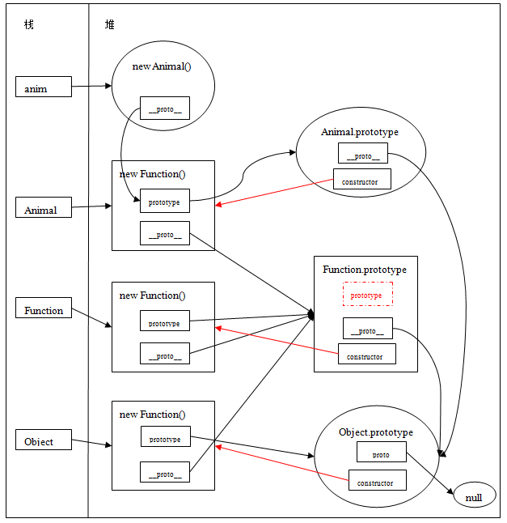

在 JavaScript 中，每个函数对象都有名为“prototype”的属性(上面提到过Function.prototype函数对象是个例外，没有prototype属性)，用于引用原型对象。此原型对象又有名为“constructor”的属性，它反过来引用函数本身。这是一种循环引用（i.e. Animal.prototype.constructor===Animal）。
通过以下例子跟内存效果图来分析Prototype、constructor间的关系。
console.log('**************constructor****************');
console.log('anim.constructor===Animal:'+(anim.constructor===Animal)) ; //true
console.log('Animal===Animal.prototype.constructor:'+(Animal===Animal.prototype.constructor)) ; //true
console.log('Animal.constructor===Function.prototype.constructor:'+(Animal.constructor===Function.prototype.constructor)); //true
console.log('Function.prototype.constructor===Function:'+(Function.prototype.constructor===Function)); //true
console.log('Function.constructor===Function.prototype.constructor:'+(Function.constructor===Function.prototype.constructor)); //true
console.log('Object.prototype.constructor===Object:'+(Object.prototype.constructor===Object)); //true
console.log('Object.constructor====Function:'+(Object.constructor===Function)); //true
prototype、constructor内存关系图(在Function、Object、Prototype关系图上加入constructor元素)

上图中，红色箭头表示函数对象的原型的constructor所指向的对象。
注意Object.constructor===Function；本身Object就是Function函数构造出来的
如何查找一个对象的constructor，就是在该对象的原型链上寻找碰到的第一个constructor属性所指向的对象。